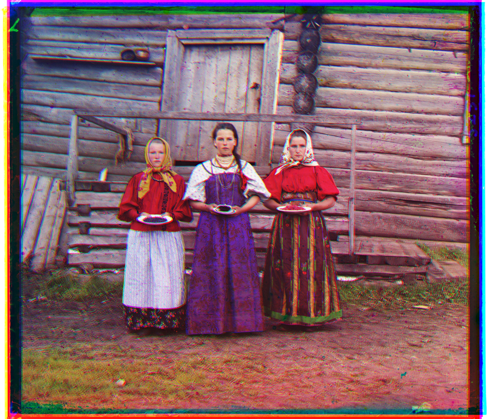
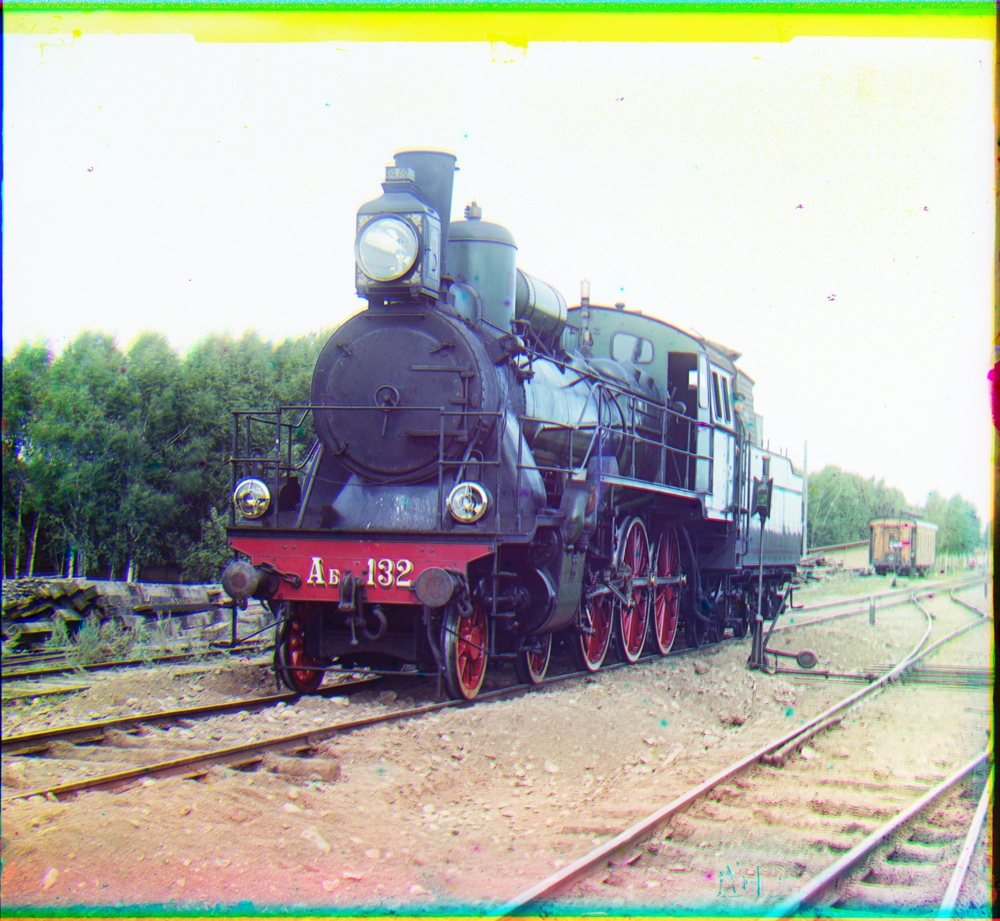

180 Project 1
CS 180 Project Report 1 - Yashish Mohnot
The project is to align the RGB digitized glass plates to form a color image.
Approach:
- Shifting - I shifted the images using the np.roll function. I let the images roll over, since I was dealing with the edges later.
- Scoring - I used the NCC function to score. One thing I realized was that the borders of the image (the black and white portions) were having a significant effect on the NCC of the image. To combat this, I blacked out 6% of the image on all 4 sides before performing NCC. This blacked out portion of the image ended up having no effect on the NCC, which is what I desired.
- Alligning - I used the pyramid method to allign the images. I started with a minimum resolution of 200, and was checking shifting 50 to the left and the right. I then doubled the resolution till I reached my original resolution, At every step, I only checked the allignment score at indices suitable to the ouput of the previous iteration of the pyramind method.
- [Bells and Whistles] Autocrop - To autocrop, I set 2 thresholds -> mean_intensity + 1*sd_intensity and mean_intensity - 1*sd_intensity. I then went through all 4 edges of the image and only removed a row/column if every cell in the column had one of the rgb values outside these thresholds. This would indicate that that row/column is too dark / too light in some of the colors, which would make me want to crop it.
- [Bells and Whistles] Autocotrast - I scaled the intensities linearly to be between 0 and 1
This is my results on all the images (and a few images of my choosing) BEFORE autocontrast and autocrop, with the offsets calculated (in the form (green_x, green_y), (red_x, red_y))
-
Offset = (2,5), (4, 12)
-
Offset = (8,32), (0, 64)
-
Offset = (32, 50), (48, 103)
-
Offset = (32, 64), (32, 128)
-
Offset = (18, 48), (32, 96)
-
Offset = (8, 64), (16, 112)
-
Offset = (16, 96), (16, 192)

Offset = (2, -3), (2, 3)-
Offset = (32, 64), (40, 112)
Offset = (0, 34), (-24, 144)
Offset = (28, 96), (36, 192)
Offset = (16, 64), (16, 128)
Offset = (3, 3), (4, 7)
Offset = (8, 48), (33, 96)
Offset = (8, 64), (16, 128)
Offset = (4, 36), (8, 98)- 
Offset = (16, -16), (32, 16)
This is my results on all the images (and a few images of my choosing) AFTER autocontrast and autocrop


-
-
-
-
-
- 

As we can see the autocrop does a really good job ob almost always cropping off the borders, while the autocontrast makes the image look (slightly) more crisp